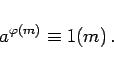
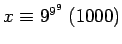
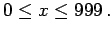
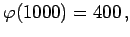
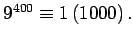
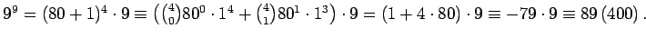
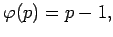
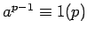
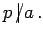

Inhalt Index DeskTop Bronstein

 Algebra und Diskrete Mathematik Elementare Zahlentheorie Sätze von Fermat, Euler und Wilson
Algebra und Diskrete Mathematik Elementare Zahlentheorie Sätze von Fermat, Euler und Wilson


Der Satz von FERMAT-EULER ist einer der wichtigsten Sätze der elementaren Zahlentheorie. Sind a und m teilerfremde natürliche Zahlen, dann gilt:
|  | (5.284) |
| Beispiel |
|
Es sind die letzten drei Ziffern der Dezimalbruchdarstellung von 99 9 zu ermitteln. Gesucht ist x mit  mit  Es gilt  und nach dem Satz von FERMAT ist  Weiter gilt  |
Hinweis: Der obige Satz geht für m=p, d.h.  auf FERMAT zurück; die allgemeine Form stammt von EULER. Der Satz bildet die Grundlage eines Codierungsverfahrens. Er beinhaltet ein notwendiges Kriterium für die Primzahleigenschaft einer natürlichen Zahl: Ist p eine Primzahl, dann gilt  für jede ganze Zahl a mit 